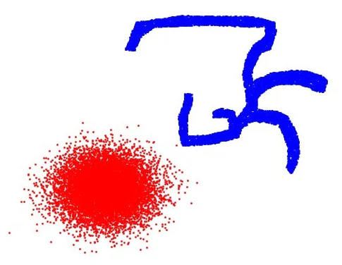
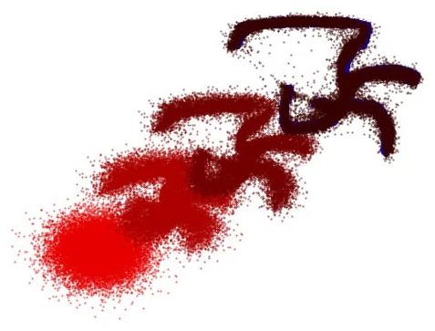
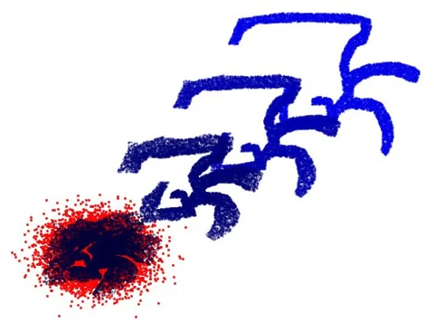
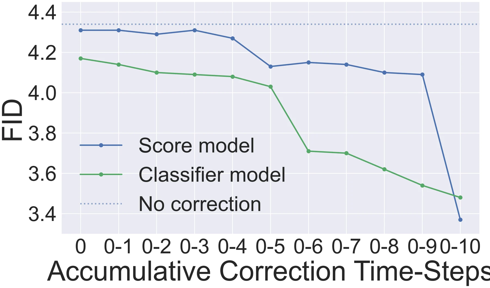
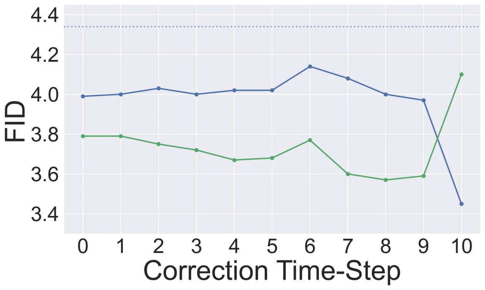
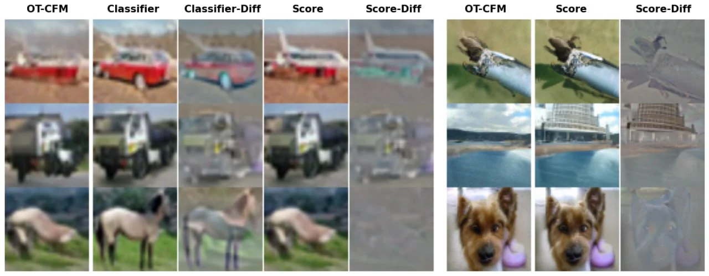
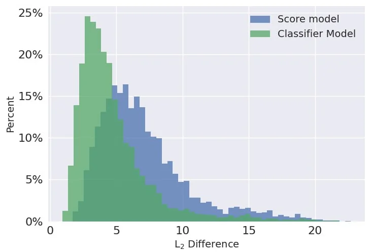

In short
Flow-matching models turn noise into data by following a learned vector field. Because the field is learned imperfectly, some samples land off-target, and a better ODE solver can't fix that. The key observation is that running the same imperfect field in reverse from the data distribution gives intermediate distributions that the model carries exactly back to the data distribution (as distributions, not by memorizing individual images). We train a small corrector that moves samples toward them. One extra network call takes CIFAR-10 FID from 4.34 to 3.45, better than an adaptive solver using three times the compute.
What’s new. A correction target that is exact for the model as it actually is, not for an idealized one. We prove the two paths coincide only when the model is perfect, and, under simplifying assumptions, analyze how much each correction step can help, which suggests where corrections are worth spending.
Where the errors come from
A flow-matching model learns a velocity field v(x, t). Generation starts from Gaussian noise at t = 0 and follows the arrows until t = 1. With a perfect model and infinitely small integration steps, samples would land exactly on the data distribution.
In practice there are two sources of error. One is discretization, because we take a handful of big steps instead of infinitely many small ones. Discretization error has received most of the attention, and many advanced solvers address it. The other is that the field itself is wrong. A neural network trained on finite data with finite capacity learns an approximation, so even a perfect solver ends up at a distribution that is close to the data, but not the data.
In diffusion models, this kind of drift is commonly addressed with predictor–corrector sampling. After every step, a corrector moves the sample back toward where it should be at that time. The natural question for flows is where it should be.
Run the flow backwards
The obvious answer is the marginals the model was trained on, the straight-line interpolations between noise and data. But those were built for a perfect model. For our model, with our errors, following them is not guaranteed to lead anywhere useful.
A flow is an ODE, and ODEs can be run in reverse. Integrating the learned field backwards from the data, from t = 1 to t = 0, gives a sequence of distributions, which we call the backward marginals. The whole paper is built on the following observation: running the model forward from the backward marginals retraces those steps and lands exactly on the data distribution, no matter how imperfect the field is.
An imperfect model still has a path that leads exactly to the data distribution.
The model's actual path starts from true Gaussian noise, and the backward path starts from a slightly different distribution (whatever the data turns into after flowing backwards). These two paths overlap a lot, and the samples that end up off-target come from the places where they differ. We even prove that the forward and backward paths agree everywhere if and only if the model reaches the data exactly.

(a) source & target
(b) forward marginals
(c) backward marginalsSeeing the two paths
Here is the same picture with particles. The data is six blobs on a ring, and the "model" is the exact flow for this data with its sense of which blob a point belongs to deliberately blurred, the way an under-fit network smooths things out. Compare the three numbers under the plot.
Two paths through the same imperfect flow
Everything runs in the browser on 900 particles. The corrector here is one step along the score of the backward marginal, estimated with a simple kernel density. That’s the same kind of correction as the paper’s score model, just without a neural network.
The model on its own puts a share of its samples between the blobs. Start the same imperfect model on the backward path and none land there, because that path is exact for it. Press Play on the backward path to see why the model misses it. It starts from a cloud that is almost, but not quite, the Gaussian we sample from. The corrected view closes most of the gap with three small nudges toward the backward path, without ever being told where a sample should end up.
How to correct
So after each solver step, we move the sample from the model's path toward the backward path at the same time. We get the backward marginals for free. Just take training images and run the frozen flow model in reverse.

We tried two kinds of correctors, both much smaller than the flow model itself.
- 1A score model. A denoiser trained only on backward-marginal samples. One step along its gradient pulls a sample toward the backward path. It never sees the model's own mistakes during training, and it still works best.
- 2A robust classifier. It learns to tell "forward" samples from "backward" samples at each time, and we follow its gradient toward "backward". Making those gradients useful took some care (adversarial training and a gradient-alignment loss).
The classic way to use a score model for correction is many steps of Langevin dynamics. For us, a single step was both cheaper and better. Small Langevin steps barely changed the image, and larger ones added noise.
Not all corrections are equal
Corrections cost compute, so where should they be spent? Under simplifying assumptions, we bounded how far the final distribution is from the data (in Wasserstein distance), given how much each correction reduces the gap at its step. The answer depends on what kind of reduction the corrector achieves.
- If each correction removes a fixed amount of error, early corrections matter more, because errors made early get amplified on the way to the end.
- If each correction removes a fixed fraction of error, position doesn't matter, so corrections belong wherever the corrector is strongest.
The experiments really do show different correctors preferring different steps.


Results
On CIFAR-10 the base OT-CFM model, sampled with 10 RK4 steps (40 network calls), gets an FID of 4.34. Adding one correction step, so 41 calls, gets it to 3.45, which is already better than the same model with an adaptive solver that uses around 134 calls (3.58). With corrections at every step we reach 3.37. On ImageNet-64, two correction calls take FID from 17.99 to 15.53, better than giving the base model eight more solver calls.

The corrections are notably selective. Most images barely change, and the corrector spends its effort on the outliers, which is exactly what is expected if the two paths mostly overlap and differ only at the edges.

The whole method relies on the flow being invertible, so that running it backward and then forward returns to the starting point. That's true for ODE flows in theory and approximately true in practice, and we can't verify it fully on real models. Extending the idea to models that are only approximately reversible, like diffusion models, is still open. Also, the method is an add-on. It improves an existing model at almost no cost, but it doesn't replace a better model.
Cite
@article{bojan2026correcting,
title = {Correcting Flows with Marginal Matching},
author = {Bojan, Meital and Bojan Sellam, Nadav and Zisselman, Ev and Tamar, Aviv},
journal = {arXiv preprint arXiv:2611.23134},
year = {2026}
}